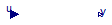

Package Content
| Name |
Description |
| PathPosition
|
Calculate path coordinates based on integrating global velocity |
 Curve90deg Curve90deg
|
Output curvature as a function of path length for a 90° curve |
| MotionOffset
|
Calculate velocities and positions of a point offset from vehicle c.g. |
| PathPosition90degCurve
|
Calculate the position of a point given by the offest parameters. |
Calculate path coordinates based on integrating global velocity
Parameters
| Type | Name | Default | Description |
|---|
| Position | s0 | 0 | Initial position along path [m] |
| Position | n0 | 0 | Initial position normal to path [m] |
Connectors
| Type | Name | Description |
|---|
| input RealInput | vx | Vehicle longitudinal velocity (vehicle local) |
| input RealInput | vy | Vehicle lateral velocity (vehicle local) |
| input RealInput | pz | Vehicle heading angle (global) |
| output RealOutput | s_out | Position along path |
| output RealOutput | n_out | Position normal to path |
| output RealOutput | d_n_out | Derivative of position normal to path |
| output RealOutput | pp_out | Path direction |
| input RealInput | c | Path curvature |
Modelica definition
Output curvature as a function of path length for a 90° curve

Information
Extends from Modelica.Blocks.Interfaces.SISO (Single Input Single Output continuous control block).
Parameters
| Type | Name | Default | Description |
|---|
| Length | radius | 12.5 | Curve radius [m] |
| Position | s_start | 50 | Position along path when curve starts [m] |
Connectors
| Type | Name | Description |
|---|
| input RealInput | u | Connector of Real input signal |
| output RealOutput | y | Connector of Real output signal |
Modelica definition
Calculate velocities and positions of a point offset from vehicle c.g.
Information
Extends from Modelica.Blocks.Icons.Block (Basic graphical layout of input/output block).
Parameters
| Type | Name | Default | Description |
|---|
| Position | x_offset | 0 | Longitudinal offset [m] |
| Position | y_offset | 0 | Lateral offset [m] |
Connectors
| Type | Name | Description |
|---|
| input RealInput | vx | Vehicle longitudinal velocity (vehicle local) |
| input RealInput | vy | Vehicle lateral velocity (vehicle local) |
| input RealInput | wz | Vehicle yaw rate |
| output RealOutput | vx_offset | Longitudinal velocity at offset point |
| output RealOutput | vy_offset | Lateral velocity at offset point |
Modelica definition
Calculate the position of a point given by the offest parameters.
Parameters
| Type | Name | Default | Description |
|---|
| Integer | nu | 2 | Number of units |
| Integer | na | 3 | Max number of axles per unit |
| Position | x_offset | 0 | Longitudinal offset [m] |
| Position | y_offset | 0 | Lateral offset [m] |
| Position | s0 | 0 | Initial position along path [m] |
| Position | n0 | 0 | Initial position normal to path [m] |
| Length | radius | 12.5 | Curve radius [m] |
| Position | s_start | 50 | Position along path when curve starts [m] |
Connectors
Modelica definition
model PathPosition90degCurve
Components.PathPosition pathPosition(s0=s0, n0=n0);
Components.MotionOffset motionOffset(x_offset=x_offset, y_offset=y_offset);
Modelica.Blocks.Interfaces.RealInput vx ;
Modelica.Blocks.Interfaces.RealInput vy ;
Modelica.Blocks.Interfaces.RealInput wz ;
Modelica.Blocks.Interfaces.RealInput pz ;
Modelica.Blocks.Interfaces.RealOutput s_out ;
Modelica.Blocks.Interfaces.RealOutput n_out ;
Modelica.Blocks.Interfaces.RealOutput d_n_out ;
Modelica.Blocks.Interfaces.RealOutput pp_out ;
parameter Integer nu=2 ;
parameter Integer na=3 ;
parameter Modelica.SIunits.Position x_offset=0 ;
parameter Modelica.SIunits.Position y_offset=0 ;
parameter Modelica.SIunits.Position s0=0 ;
parameter Modelica.SIunits.Position n0=0 ;
Components.Curve90deg curve90deg(radius=radius, s_start=s_start);
parameter Modelica.SIunits.Length radius=12.5 ;
parameter Modelica.SIunits.Position s_start=50
;
equation
connect(motionOffset.vx_offset, pathPosition.vx);
connect(motionOffset.vy_offset, pathPosition.vy);
connect(vx, motionOffset.vx);
connect(vy, motionOffset.vy);
connect(wz, motionOffset.wz);
connect(pz, pathPosition.pz);
connect(pp_out, pp_out);
connect(pathPosition.s_out, s_out);
connect(pathPosition.n_out, n_out);
connect(pathPosition.d_n_out, d_n_out);
connect(pathPosition.pp_out, pp_out);
connect(curve90deg.y, pathPosition.c);
connect(pathPosition.s_out, curve90deg.u);
end PathPosition90degCurve;
Automatically generated Sun Jul 16 11:17:01 2017.
 OpenPBS.Components.PathPosition
OpenPBS.Components.PathPosition OpenPBS.Components.Curve90deg
OpenPBS.Components.Curve90deg